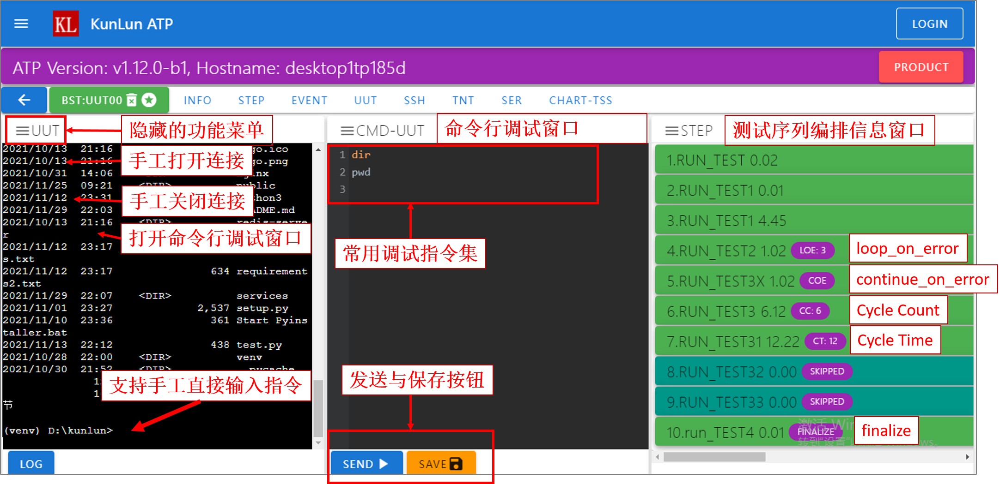
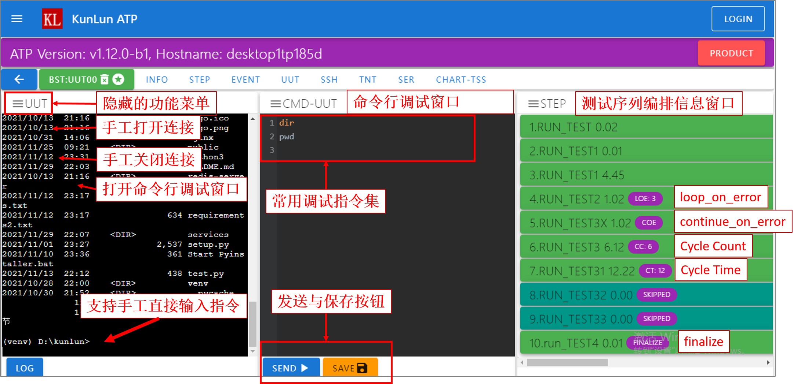

用户界面¶
平台使用WEB界面作为用户操作界面，用户可以通过测试主机的IP地址进行远程连接、调试与协同。 平台已经针对不同尺寸的屏幕进行优化适配，支持平板、手机等终端远程操作。
Station测试工站界面¶
Station 测试工站，是用来分不同的测试任务集合。
例如不同产品采用不同的 Station ，或是同一产品的不同工序采用不同的 Station 。

用户可以为每一个 Station 设置不同的 封面图片 ，同时进行个性化的 描述说明 (如：功能测试，FT测试等) 。
需要注意的是，Station 的名称不能重复。
Container测试工位界面¶
Container 测试工位，是执行具体测试任务的载体，每个测试工位根据测试业务代码，
可以同时执行相同的测试任务，也可以同时执行不同的测试任务。

测试工位面板显示不同颜色，表示不同的测试状态。白色为
闲置， 黄色为运行， 红色为失败，绿色为通过。定制区：用户可以在测试用例中调用接口函数，对定制区的显示内容进行设置，如产品的序列号，类型，当前的测试项目等。
操作区：用户可以点击操作区的图标，完成
开始测试,停止测试与回收测试等相关操作。
需要注意的是，Container 的名称不能重复。
Connection测试连接界面¶
Connection连接界面主要目的是开发调试，界面包含多种类型窗口，可以实时展示测试过程中产生的产品日志，事件日志，测试序列等信息。
 

每个
Container工位都默认包含INFO、STEP与EVENT三个窗口。用户可以根据测试业务需要，配置若干个
连接。 图片中仅配置了一个连接，即UUT。当连接(例如
UUT窗口)的状态为open时，且Container不处于在测状态，用户可以在连接窗口手工输入命令行，调试产品。
需要注意的是，Connection 的名称不能重复。
Ask Question交互界面¶
调用接口函数 lib.ask_question() 与 lib.ask_questions() 可以在Container界面与Connection界面弹出交互窗口, 采集用户输入。
lib.ask_question()提出一个问题，一般仅采集一条数据。

同一个
Station工站下的所有Container工位，在同一个时间，仅能有一个Container可以提出问题，其他提问题的Container需要排队，排队遵循FIFO先进先出原则。在答案输入框内输入完毕后，可以直接使用
回车提交答案，也可以点击提交答案按钮提交答案。
lib.ask_questions()提出多个问题，可以同时采集多条数据。
lib.ask_questions()与lib.ask_question()一样，排队遵循FIFO先进先出原则。在答案输入框内输入完毕后，可以使用
回车跳到下一个答案输入框。在最后一个答案输入框使用回车，将提交答案，也可以在任意时候点击提交答案按钮提交答案，未回答的问题，答案为””(空字符串)。
测试数据查询界面¶
测试数据查询界面可以查询历史测试记录，并下载与之关联的测试日志。
需要注意的是，用户必须使用接口函数 lib.add_test_data() 生成测试记录后，才能够查询到测试记录。

用户在
输入框内输入产品序列号后，可以直接回车进行查询，也可以点击查询按钮进行查询。
测试参数配置界面¶
测试参数配置界面可以配置项目下的XLSX文件 params.xlsx，使用网页对XLSX文件进行增删改查, 支撑远程调试。

在用户测试代码中，可以使用接口函数
lib.get_xlsx_params()获取测试参数。
指标数据配置界面¶
指标数据配置界面可以配置项目下的XLSX文件 meas.xlsx，使用网页对XLSX文件进行增删改查, 支撑远程调试。
在用户测试代码中，可以使用接口函数
lib.xlsx_measure()进行测试指标数据对比。